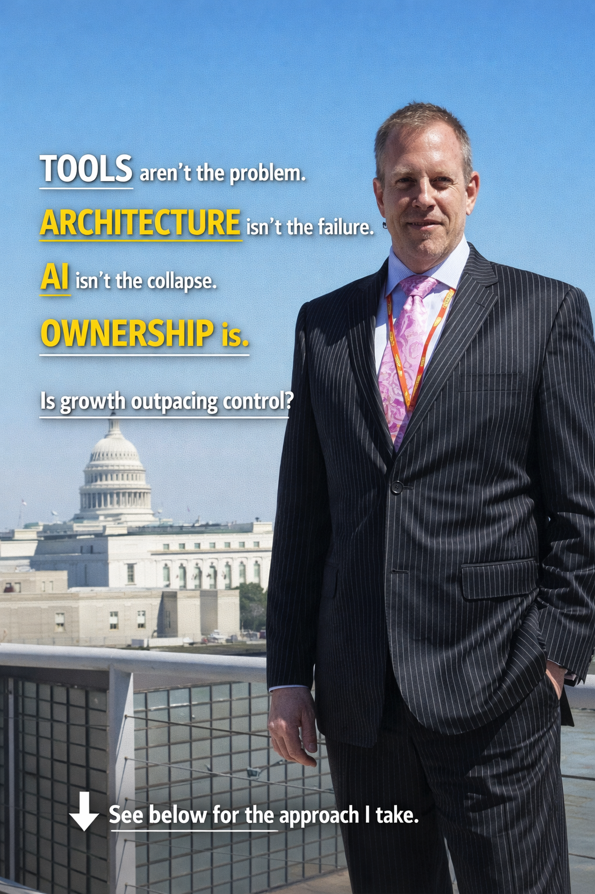

Disconnected ownership
Cyber, IT, vendors, operations, and AI usage often sit in different accountability lanes.
Executive Operational Control for Cyber & AI Risk
Maximum Justice Cybersecurity helps leadership regain operational visibility, governance clarity, and executive confidence before fragmented cyber and AI decisions become business disruption.
CyberShield Preview
Organizations have cybersecurity tools, vendors, compliance obligations, operational dependencies, and AI experimentation. What leadership often lacks is a clear operational picture of how those risks interact, who owns them, and where governance visibility breaks down.
Cyber, IT, vendors, operations, and AI usage often sit in different accountability lanes.
Executives receive technical activity, but not always decision-ready operational visibility.
Teams adopt tools faster than governance, authority, and accountability models mature.
Compliance evidence may exist without clear operational confidence or ownership clarity.
Artificial intelligence is increasingly influencing operational decisions across healthcare, manufacturing, finance, federal contracting, and business operations.
But when operational failures occur, regulators, boards, customers, and courts still ask the same question: Who owned the decision?

CyberShield is the operational layer that makes cyber and AI governance visible, discussable, and actionable for leadership.
Fast executive intake designed to surface governance blind spots and operational exposure.
Board-readable visibility into readiness, ownership, vendor risk, audit posture, and AI exposure.
Prioritized actions that convert cyber and AI ambiguity into accountable next steps.
CMMC readiness, NIST 800-171, supply-chain risk, contract exposure.
HIPAA, ransomware exposure, patient data, vendor dependency, continuity.
Downtime, OT exposure, vendor complexity, production disruption.
Trust, regulatory pressure, vendor governance, cyber maturity.
Confidentiality, AI tool usage, client trust, document risk.
This short assessment is designed to create an executive readiness snapshot, not a technical audit.
Focused leadership sessions that translate fragmented cyber and AI risk into actionable priorities.
Executive security leadership for organizations that need governance, accountability, and decision support.
Human-command-centered governance for AI adoption, oversight, accountability, and operational risk.
Dr. Max Justice is a vCISO, Security SME, Cybersecurity SME, U.S. veteran, and creator of The CHN vCISO GPT powered by Cyber Shield.
He works with organizations facing operational complexity, fragmented cyber visibility, AI governance pressure, audit exposure, and executive accountability risk.
A focused executive session designed to help leadership evaluate operational cyber and AI readiness, identify governance blind spots, clarify accountability, and prioritize next actions.